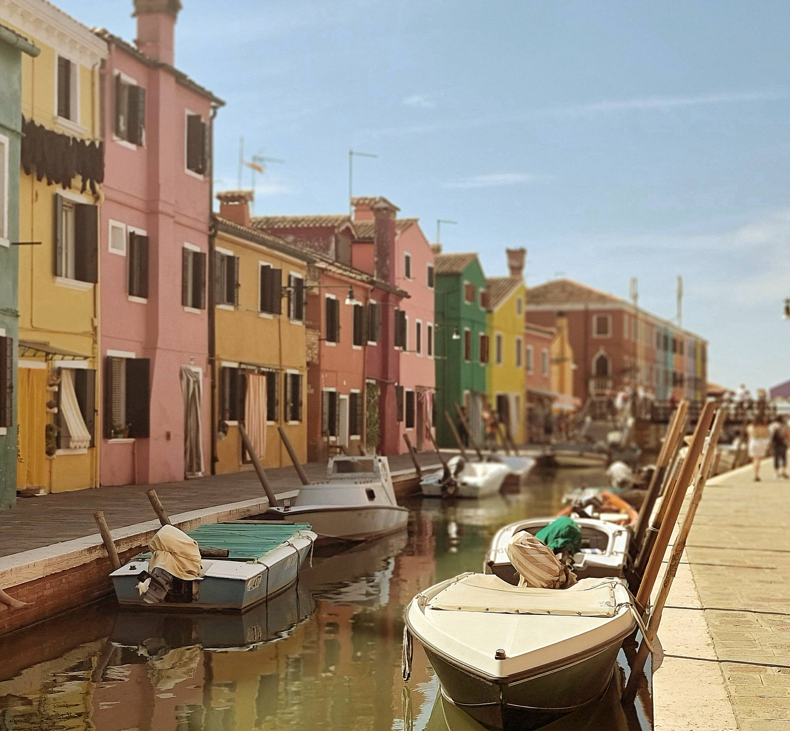

Laboration 1.2 - Bildbehandling
I denna uppgift har jag arbetat med digital bildbehandling för att skapa en enhetlig bildserie anpassad för webben
För att färgkorrigera, beskära och frilägga bilderna har jag använt mig av Photopea.
Min bildserie

![[Bild tagen underifrån på gamla ruiner]](images/bildserie002.jpg)
![[En grupp bergsklättrare påväg uppåt]](images/bildserie003.jpg)